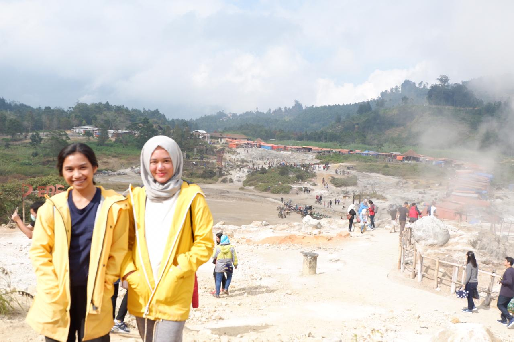

Kawah Sikidang
Lokasi
Salah satu destinasi wisata yang menjadi daya tarik di dieng adalah Kawah Sikidang yang fenomenal. Kawang ini dibaeri nama sikidang yang mempunyai arti kidang / kijang. Wisata ini berada di Desa Dieng Kulon, Kecamatan Batur, Kabupaten Banjarnegara.
Informasi Umum
Kota Banjarnegara juga terkenal akan keindahan obyek wisatanya , salah satunya adalah Wisata Kawah Sikidang Dieng Banjarnegara Jawa Tengah ini. Wisata Kawah Sikidang Dieng Banjarnegara Jawa Tengah termasuk obyek wisata unggulan
Dieng yang wajib dikunjungi. Di antara kawah-kawah lainnya di Dieng, Kawah Sikidang adalah yang paling mudah dicapai dan dinikmati karena terletak di tanah datar.
Kawah Sikidang Dieng juga terkenal dengan fenomena kolam kawahnya yang bisa berpindah atau melompat dalam satu kawasan yang luas. Itulah sebabnya Kawah Sikidang menjadi salah satu dari banyak kawah di kawasan wisata Dataran Tinggi
Dieng yang paling diminati.Tiap hari libur banyak yang berbondong-bondong menyaksikan aktivitas vulkanik yang dengan mudah bisa disaksikan langsung.Posisi Kawah Sikidang Dieng berbeda dengan kawah pada umumnya yang terletak di
tinggi puncak gunung berapi dan susah untuk melihatnya. Sedangkan Kawah Sikidang berada di tanah yang datar sehingga pengunjung leluasa melihat lumpur panas meletup-letup dan gas atau asap yang berwarna putih pekat mengepul di
udara. Fenomena alam yang benar-benar menarik perhatian.
Kawah Sikidang terbentuk dari letusan gunung berapi di kawasan Dataran Tinggi Dieng bertahun-tahun lalu. Sampai kini kawah ini masih aktif makanya jika Anda mengunjungi kawah Anda akan melihat aktivitas gunung berapi berupa lumpur
vulkanik yang meletup-letup disertai gas beracun yang menepul berbentuk asap putih pekat.
Transportasi
Sarana transportasi yang dipakai untuk berwisata ke Wisata Kawah Sikidang Dieng Banjarnegara Jawa Tengah dengan memakai kendaraan pribadi seperti : Mobil atau motor pribadi. Anda bisa meminta panduan arah ke Wisata Kawah Sikidang Dieng Banjarnegara Jawa Tengah di google maps yang terpasang di smartphone anda. Karena memakai kendaraan pribadi akan lebih menyenangkan dari pada memakai kendaraan umum. Akan tetapi jika anda memakai kendaraan umum seperti : bis umum atau angkutan lainnya juga bukan masalah besar, pasalnya anda bisa berhenti di terminal bus kota atau desa tujuan anda. Setelah itu melanjutkan dengan menggunakan ojek ataupun kendaraan pribadi anda menuju lokasi Wisata Kawah Sikidang Dieng Banjarnegara Jawa Tengah tersebu